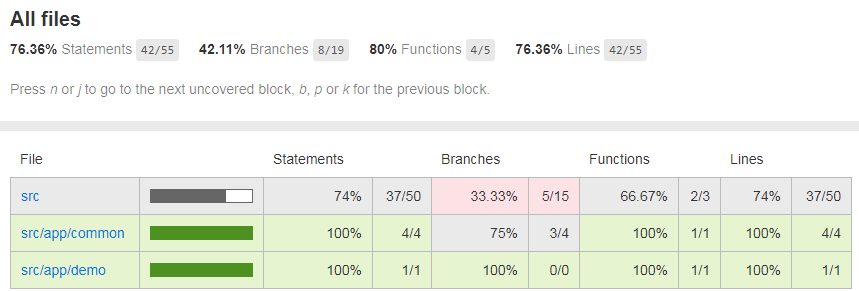

使用Mocha、Istanbul和Chai实现TypeScript单元测试和覆盖率
本文主要描述使用Mocha、Istanbul和Chai实现TypeScript单元测试和覆盖率的方法和过程，并简单记录SonarQube的相关配置。
Github: https://github.com/prufeng/tsexpress
关于JavaScript的单元测试和覆盖率，可参考：使用Mocha和Istanbul实现Node.js单元测试和覆盖率
Install
安装相关module和types。
Mocha是基本单元测试工具。
nyc用来统计代码覆盖率。
Chai则主要用来测试HTTP request。
npm i -D mocha
npm i -D nyc
npm i -D chai
npm i -D chai-http
npm i -D source-map-support
npm i -D @types/mocha
npm i -D @types/chai
npm i -D @types/chai-http
Mocha
mocha.opts
创建test/mocha.opts，配置如下。
--require ts-node/register
--require source-map-support/register
--recursive
--full-trace
--bail
test/**/*.spec.ts
app.spec.ts
创建test/app.spec.ts，添加以下test case测试当前的几个RESTful API。
import chai from 'chai';
import chaiHttp from 'chai-http';
import server from '../src/server';
let should = chai.should();
chai.use(chaiHttp);
describe('App Unit Test', () => {
it('should get status 200', (done) => {
chai.request(server)
.get('/')
.end((err, res) => {
res.should.have.status(200);
done();
});
});
it('should get user list', (done) => {
chai.request(server)
.get('/users')
.end((err, res) => {
res.should.have.status(200);
res.text.should.eql('respond with the user list here');
done();
});
});
it('should get status 404', (done) => {
chai.request(server)
.get('/wrongUrl2018')
.end((err, res) => {
res.should.have.status(404);
// res.text.should.eql('respond with the user list here');
done();
});
});
});
Unit Test
运行mocha命令，测试通过的结果如下。
mocha
App Unit Test
GET / 200 13.293 ms - 198
√ should get status 200
GET /users 200 0.662 ms - 31
√ should get user list
GET /wrongUrl2018 404 7.099 ms - 1339
√ should get status 404
3 passing (55ms)
Istanbul(nyc)
package.json
修改package.json，增加nyc相关配置。include和extesion包含需要测试的source code，reporter指明需要生成的report，缺省为text。
"scripts": {
"start": "npm run serve",
"serve": "node dist/out-tsc/server",
"test": "nyc mocha",
"build":"tsc -p tsconfig.json"
},
"nyc": {
"include": [
"src/**/*.ts",
"src/**/*.tsx"
],
"exclude": [
"**/*.d.ts"
],
"extension": [
".ts",
".tsx"
],
"require": [
"ts-node/register"
],
"reporter": [
"text",
"html"
],
"sourceMap": true,
"instrument": true,
"all": true
},
npm test
npm test实际上是运行nyc mocha，但直接运行nyc mocha得不到正确的结果，因为无法加载package.json里的nyc配置。
成功运行后参考结果如下。
--------------------|----------|----------|----------|----------|-------------------|
File | % Stmts | % Branch | % Funcs | % Lines | Uncovered Line #s |
--------------------|----------|----------|----------|----------|-------------------|
All files | 79.03 | 36.84 | 85.71 | 79.03 | |
src | 74 | 33.33 | 66.67 | 74 | |
app.ts | 100 | 100 | 100 | 100 | |
server.ts | 56.67 | 33.33 | 66.67 | 56.67 |... 70,72,73,74,76 |
src/app/common | 100 | 50 | 100 | 100 | |
errHandler.ts | 100 | 50 | 100 | 100 | 7,9 |
src/app/demo | 100 | 100 | 100 | 100 | |
homeController.ts | 100 | 100 | 100 | 100 | |
userController.ts | 100 | 100 | 100 | 100 | |
--------------------|----------|----------|----------|----------|-------------------|
如果生成了html report，可在coverage目录下打开index.html。html report的好处是可以点击查看每个文件的具体测试覆盖详情。 
SonarQube
Install SonarQube Plugin - SonarTS
https://docs.sonarqube.org/display/PLUG/SonarTS
sonar.properties
sonar.javascript.lcov.reportPaths=coverage/lcov.info
sonar.typescript.lcov.reportPaths=coverage/lcov.info
(Works without sonar.typescript.lcov.reportPaths configure from my test. )